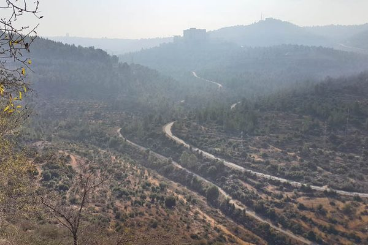
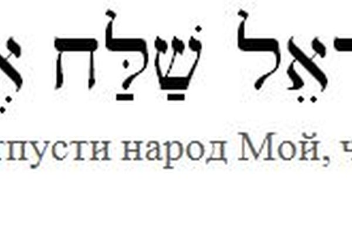
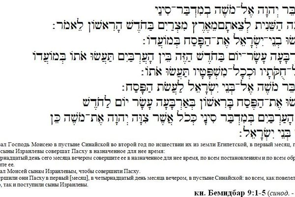
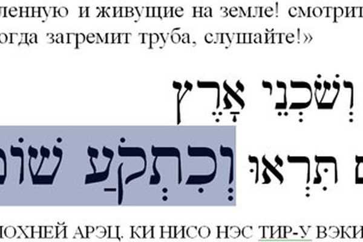
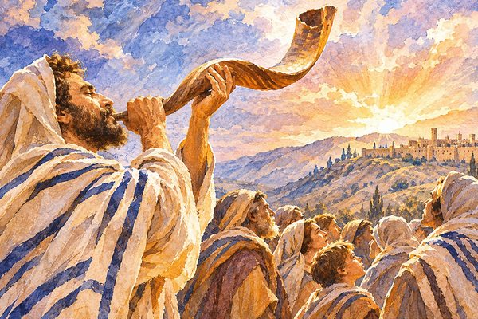
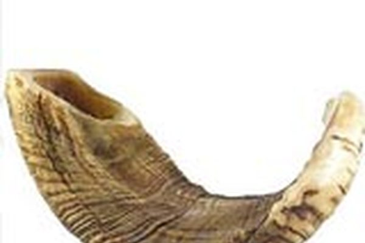
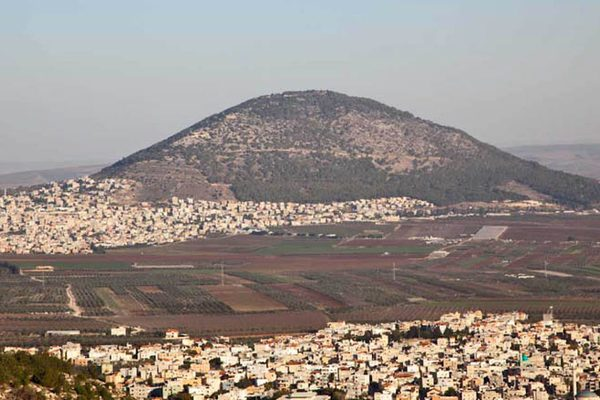
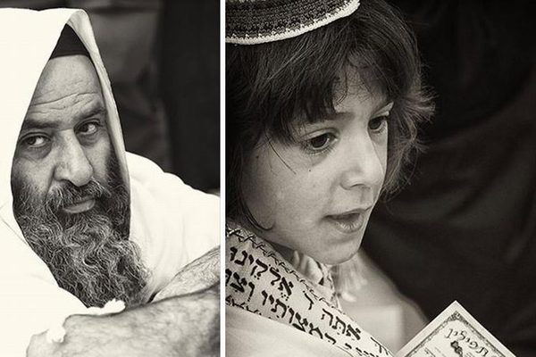

Праздники Господни
Библейские праздники как высшее выражение творчества человека пред Творцом
53 статьи
 Сила РАДОСТИ | Всегда радуйтесь !2018 · Праздники Господни
Сила РАДОСТИ | Всегда радуйтесь !2018 · Праздники Господни Еврейское отношение к Праздникам Господним2015 · Праздники Господни
Еврейское отношение к Праздникам Господним2015 · Праздники Господни
Восхождение в Иерушалаим2017 · Праздники Господни, Путешествия, Галереи Праздник | ТВОРЕНИЕ ПАМЯТЬЮ2018 · Праздники Господни
Праздник | ТВОРЕНИЕ ПАМЯТЬЮ2018 · Праздники Господни Знай ПРЕД КЕМ ты стоишь! СТОЛП ОГНЕННЫЙ2016 · Арт-мидраш, Артефакты, Галереи, Библия и художник, Праздники Господни
Знай ПРЕД КЕМ ты стоишь! СТОЛП ОГНЕННЫЙ2016 · Арт-мидраш, Артефакты, Галереи, Библия и художник, Праздники Господни
 ПЕСАХ / Пасха Иудейская | ВСЕ СТАТЬИ И ВИДЕО К ПРАЗДНИКУ2018 · Праздники Господни
ПЕСАХ / Пасха Иудейская | ВСЕ СТАТЬИ И ВИДЕО К ПРАЗДНИКУ2018 · Праздники Господни ОТПУСТИ МОЙ НАРОД! Праздник Песах. Исход2014 · Арт-мидраш, Праздники Господни
ОТПУСТИ МОЙ НАРОД! Праздник Песах. Исход2014 · Арт-мидраш, Праздники Господни ИСХОД - это ПРО НАС2018 · Арт-мидраш, Праздники Господни, Библия и художник
ИСХОД - это ПРО НАС2018 · Арт-мидраш, Праздники Господни, Библия и художник
Бог говорит в ПУСТЫНЕ2015 · Праздники Господни При Исходе евреи взяли Египет с собой?2015 · Праздники Господни, Артефакты
При Исходе евреи взяли Египет с собой?2015 · Праздники Господни, Артефакты ИСХОД из Египта. Взгляд Джеймса ТИССО2015 · Праздники Господни, Галереи, Библия и художник
ИСХОД из Египта. Взгляд Джеймса ТИССО2015 · Праздники Господни, Галереи, Библия и художник Современные художники трактуют ПАСХАЛЬНУЮ АГАДУ2015 · Арт-мидраш, Праздники Господни, Галереи, Библия и художник
Современные художники трактуют ПАСХАЛЬНУЮ АГАДУ2015 · Арт-мидраш, Праздники Господни, Галереи, Библия и художник ПАСХАЛЬНАЯ АГАДА. Историческая справка2015 · Праздники Господни, Артефакты, Библия и художник
ПАСХАЛЬНАЯ АГАДА. Историческая справка2015 · Праздники Господни, Артефакты, Библия и художник ПЕСАХ (Пасха) в израильской РЕКЛАМЕ2014 · Праздники Господни, Артефакты
ПЕСАХ (Пасха) в израильской РЕКЛАМЕ2014 · Праздники Господни, Артефакты Песах. ИЗ ЧЕГО отцы наши в ПУСТЫНЕ МАЦУ ПЕКЛИ?2014 · Праздники Господни
Песах. ИЗ ЧЕГО отцы наши в ПУСТЫНЕ МАЦУ ПЕКЛИ?2014 · Праздники Господни
ПРЕСНЫЙ ХЛЕБ, СОШЕДШИЙ С НЕБА2014 · Праздники Господни МАЦА - ПРЕСНЫЙ ХЛЕБ. Как сделать мацу. РЕЦЕПТ /+ видео/2014 · Праздники Господни
МАЦА - ПРЕСНЫЙ ХЛЕБ. Как сделать мацу. РЕЦЕПТ /+ видео/2014 · Праздники Господни Песах. БЛЮДА ИЗ МАЦЫ от Миши Рубина2014 · Праздники Господни
Песах. БЛЮДА ИЗ МАЦЫ от Миши Рубина2014 · Праздники Господни

- ГОЛОС ШОФАРА ч.1. Высокое предназначение2014 · Арт-мидраш, Праздники Господни
 ГОЛОС ШОФАРА ч.2. Призвание2014 · Арт-мидраш, Праздники Господни
ГОЛОС ШОФАРА ч.2. Призвание2014 · Арт-мидраш, Праздники Господни Воспоминание ТРУБЛЕНИЯ ШОФАРА2014 · Арт-мидраш, Праздники Господни
Воспоминание ТРУБЛЕНИЯ ШОФАРА2014 · Арт-мидраш, Праздники Господни ГОЛОС ШОФАРА ч.4. ЮБИЛЕЙ2014 · Арт-мидраш, Праздники Господни
ГОЛОС ШОФАРА ч.4. ЮБИЛЕЙ2014 · Арт-мидраш, Праздники Господни ГОЛОС ШОФАРА ч.52014 · Арт-мидраш, Праздники Господни
ГОЛОС ШОФАРА ч.52014 · Арт-мидраш, Праздники Господни Звуки шофара. ТРЕПЕТ И ПРОРОЧЕСТВО2015 · Арт-мидраш, Праздники Господни
Звуки шофара. ТРЕПЕТ И ПРОРОЧЕСТВО2015 · Арт-мидраш, Праздники Господни Звуки шофара. ШВАРИМ. Йом Кипур2016 · Арт-мидраш, Праздники Господни
Звуки шофара. ШВАРИМ. Йом Кипур2016 · Арт-мидраш, Праздники Господни Шофар - единственный в своем роде!2015 · Арт-мидраш, Праздники Господни
Шофар - единственный в своем роде!2015 · Арт-мидраш, Праздники Господни ТРУБЛЕНИЕ ШОФАРА. Исполнение заповеди2015 · Арт-мидраш, Праздники Господни
ТРУБЛЕНИЕ ШОФАРА. Исполнение заповеди2015 · Арт-мидраш, Праздники Господни
Когда загремит ШОФАР – СЛУШАЙТЕ !2015 · Праздники Господни МОЖЕТ ли женщина трубить В ШОФАР?2014 · Праздники Господни
МОЖЕТ ли женщина трубить В ШОФАР?2014 · Праздники Господни ШОФАР или ТРУБА? ПРОВЕРИМ?2015 · Язык Библии, Праздники Господни
ШОФАР или ТРУБА? ПРОВЕРИМ?2015 · Язык Библии, Праздники Господни
СЛЫШАТЬ ГОЛОС ШОФАРА2015 · Библия и художник, Арт-мидраш, Праздники Господни
Все статьи и видео о ШОФАРЕ / праздник РОШ а-ШАНА /2018 · Праздники Господни Видео о ШОФАРЕ / праздник РОШ а-ШАНА /2014 · Праздники Господни
Видео о ШОФАРЕ / праздник РОШ а-ШАНА /2014 · Праздники Господни
 СУККА и ДИКАЯ МАСЛИНА. Сделать кущу по-написанному2015 · Праздники Господни, Израиль и Церковь
СУККА и ДИКАЯ МАСЛИНА. Сделать кущу по-написанному2015 · Праздники Господни, Израиль и Церковь ПРАЗДНИК СУККОТ. МЕЧТА семьи Деллер2015 · Арт-мидраш, Праздники Господни
ПРАЗДНИК СУККОТ. МЕЧТА семьи Деллер2015 · Арт-мидраш, Праздники Господни Куща ДАНИЭЛЯ ЛИБЕСКИНДА. Праздник СУККОТ2015 · Арт-мидраш, Праздники Господни, Артефакты, Путешествия
Куща ДАНИЭЛЯ ЛИБЕСКИНДА. Праздник СУККОТ2015 · Арт-мидраш, Праздники Господни, Артефакты, Путешествия СУККОТ. Еврейские Праздники в Евангелии2015 · Праздники Господни
СУККОТ. Еврейские Праздники в Евангелии2015 · Праздники Господни
ПРЕОБРАЖЕНИЕ. Еврейские праздники в Евангелии2015 · Праздники Господни- Восхождение в Иерушалаим2017 · Праздники Господни, Путешествия, Галереи

- ПУРИМ - еврейский праздник 2017 | ВСЕ СТАТЬИ2017 · Праздники Господни
 Пурим - СРЫВАНИЕ МАСОК2015 · Праздники Господни
Пурим - СРЫВАНИЕ МАСОК2015 · Праздники Господни Пурим - праздник НЕПРАВИЛЬНЫХ ЕВРЕЕВ2015 · Праздники Господни
Пурим - праздник НЕПРАВИЛЬНЫХ ЕВРЕЕВ2015 · Праздники Господни Пурим-шпиль. ОБЛИЧИТЬ ЗЛО...2015 · Праздники Господни, Библия и художник
Пурим-шпиль. ОБЛИЧИТЬ ЗЛО...2015 · Праздники Господни, Библия и художник- Хайфа празднует ПУРИМ 20152015 · Галереи, Праздники Господни
 Пурим. Священное смехотворство2015 · Библия и художник, Праздники Господни
Пурим. Священное смехотворство2015 · Библия и художник, Праздники Господни
- СЛЫШАТЬ ГОЛОС ШОФАРА2015 · Библия и художник, Арт-мидраш, Праздники Господни
- Все статьи и видео о ШОФАРЕ / праздник РОШ а-ШАНА /2018 · Праздники Господни
- Видео о ШОФАРЕ / праздник РОШ а-ШАНА /2014 · Праздники Господни
 Йом Кипур. Новая музыкальная версия молитвы2015 · Израиль и Церковь, Библия и художник, Праздники Господни
Йом Кипур. Новая музыкальная версия молитвы2015 · Израиль и Церковь, Библия и художник, Праздники Господни Десять ЗАПОВЕДЕЙ / АНОХИ / молитвенное пение2018 · Праздники Господни, Израиль и Церковь
Десять ЗАПОВЕДЕЙ / АНОХИ / молитвенное пение2018 · Праздники Господни, Израиль и Церковь- Праздник | ТВОРЕНИЕ ПАМЯТЬЮ2018 · Праздники Господни
- Сила РАДОСТИ | Всегда радуйтесь !2018 · Праздники Господни
- Современные художники трактуют ПАСХАЛЬНУЮ АГАДУ2015 · Арт-мидраш, Праздники Господни, Галереи, Библия и художник
- ИСХОД из Египта. Взгляд Джеймса ТИССО2015 · Праздники Господни, Галереи, Библия и художник
- ИСХОД - это ПРО НАС2018 · Арт-мидраш, Праздники Господни, Библия и художник
- ПРАЗДНИК СУККОТ. МЕЧТА семьи Деллер2015 · Арт-мидраш, Праздники Господни
- Куща ДАНИЭЛЯ ЛИБЕСКИНДА. Праздник СУККОТ2015 · Арт-мидраш, Праздники Господни, Артефакты, Путешествия
- Пурим-шпиль. ОБЛИЧИТЬ ЗЛО...2015 · Праздники Господни, Библия и художник
- ПЕСАХ (Пасха) в израильской РЕКЛАМЕ2014 · Праздники Господни, Артефакты

 ПУРИМ. Свиток Эстер художника Илияhу Сиди2016 · Праздники Господни, Библия и художник
ПУРИМ. Свиток Эстер художника Илияhу Сиди2016 · Праздники Господни, Библия и художник Уши Амана | УМЕНТАШ - рецепт пирожков с маком2015 · Праздники Господни
Уши Амана | УМЕНТАШ - рецепт пирожков с маком2015 · Праздники Господни
ОДИН ЧАС СУДНОГО ДНЯ в черно-белых тонах2014 · Праздники Господни, Библия и художник Я - СИОНИСТ! /ко дню Независимости ИЗРАИЛЯ/2014 · Праздники Господни, Израиль и Церковь
Я - СИОНИСТ! /ко дню Независимости ИЗРАИЛЯ/2014 · Праздники Господни, Израиль и Церковь